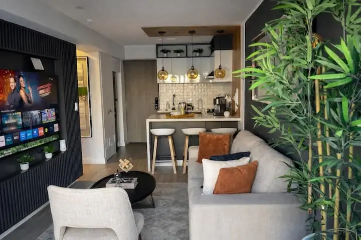
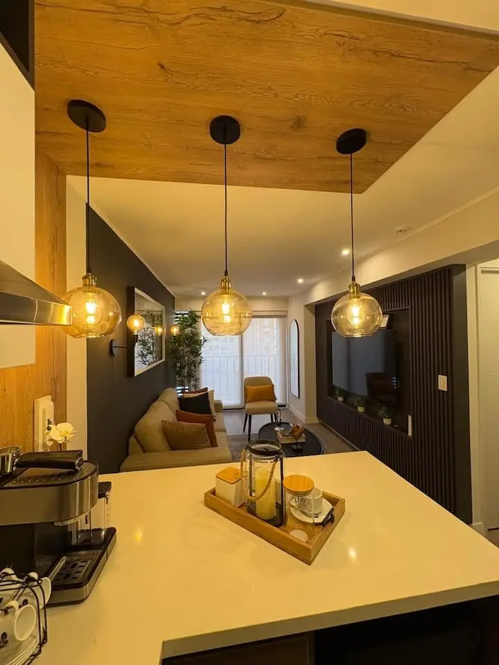
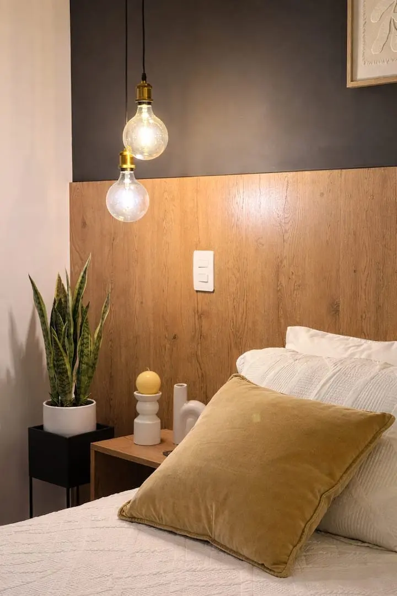
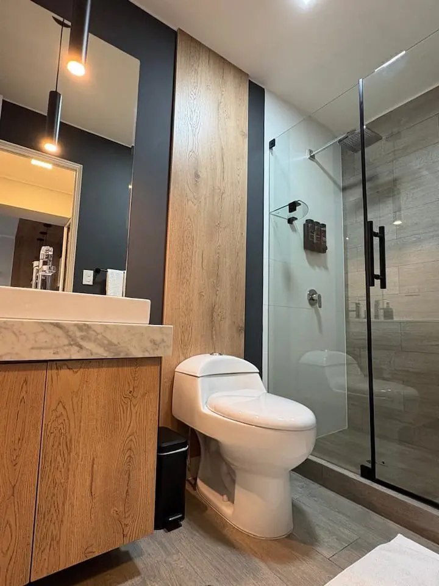
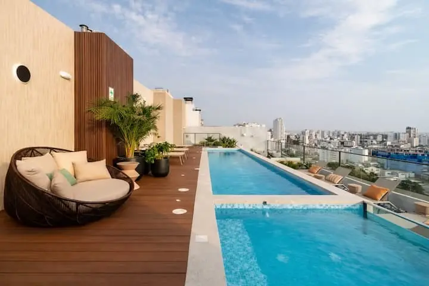
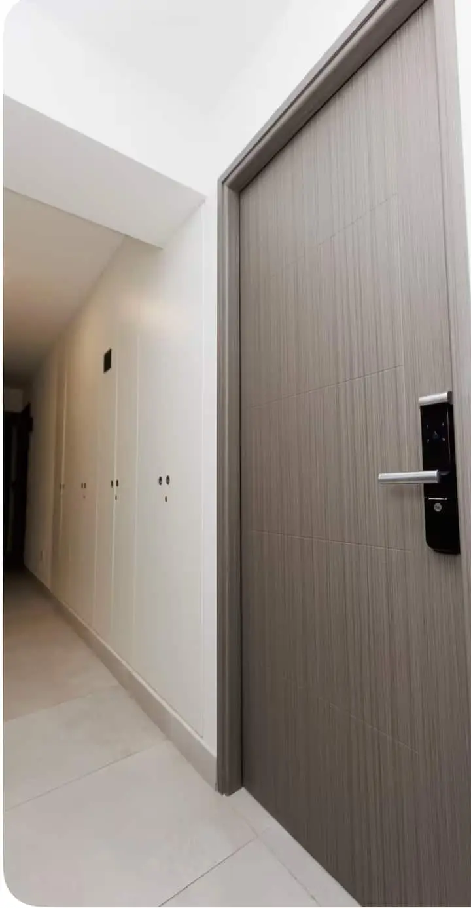

“Muy limpio y ordenado todo. Atención rápida y apoyo inmediato.”
Cristobal · Huésped verificado en AirbnbApartamento completo
Moderno, cómodo y pensado para quedarte.
Un departamento amplio y bien distribuido en el corazón de Miraflores. La luz natural, los acabados cálidos y el mobiliario funcional crean un espacio cómodo para descansar o trabajar.
Cuenta con sala acogedora, cocina equipada y dormitorio independiente. Su ubicación en la avenida 28 de Julio permite llegar fácilmente a comercios, restaurantes y algunos de los principales atractivos de la ciudad.





ComodidadesTodo lo necesario,
Todo lo necesario,
también para estancias largas.
Wi‑FiConexión para trabajo y ocio
Cocina equipadaNevera, cafetera y utensilios
PiscinaZona común del edificio
GimnasioEntrenamiento durante tu estancia
LavadoraMayor autonomía
SecadoraDisponible en el alojamiento
TelevisiónEntretenimiento en casa
Llegada autónomaCerradura con teclado

La ubicación
En el corazón de Miraflores.
Sobre la avenida 28 de Julio, cerca de comercios, restaurantes y servicios. Una base estratégica para viajes de placer o negocios, con las zonas comunes del edificio a pocos pasos del apartamento.
Restaurantes cercaComercios cerca
Consultar ubicación y fechas →Primeras evaluaciones verificadas
Una estancia que ya se siente en casa.
“Un buen lugar, acogedor, la ubicación excelente y el anfitrión muy amable.”
Dulce María · Huésped verificada en Airbnb